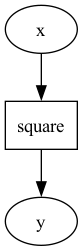

pdag — Parameter Directed Acyclic Graph


Warning
This package is under development. Many features are already implemented, but expect some breaking changes in the future.
Documentation: https://shunichironomura.github.io/pdag/
Source code: https://github.com/shunichironomura/pdag
pdag is a Python package that helps you create and execute a directed acyclic graph (DAG) of parameters and their relationships.
Its features include:
- You can define parameters and their dependencies with a Python's class-based syntax and annotations.
- You can import another model into your model, allowing you to create a hierarchy of models and reuse them.
- You can use the
pdag watchcommand to watch the graph representation of your model while you are creating it.
Installation
or any package manager that supports Python packages.
Basic usage
Here is a simple example of how to use pdag to create a model that squares a number:
from typing import Annotated
import pdag
class SquareModel(pdag.Model):
"""Square model that squares a number."""
# x is a real number parameter and is the input to the model
x = pdag.RealParameter("x")
# y is a real number parameter and is the output of the model
y = pdag.RealParameter("y")
# The relationship is defined as a static method
# with the @pdag.relationship decorator
@pdag.relationship
@staticmethod
def square(
# The annotation `x.ref()` indicates that the value of `x` will be provided
# as the value of the `x_arg` parameter when the model is executed.
# Note that we use `x_arg` as the name of the argument for documentation purposes,
# but in practice, you can just use `x` as the name of the argument.
x_arg: Annotated[float, x.ref()],
# The annotation `y.ref()` indicates that the return value of the method
# will be assigned to the `y` parameter when the model is executed.
) -> Annotated[float, y.ref()]:
return x_arg**2
This SquareModel is a static model with input x and output y.
Here is the graph representation of the model:

You can test it by running the following command in the virtual environment where you installed pdag:
To execute the model for a specific value of x, execute the following code:
core_model = SquareModel.to_core_model()
exec_model = pdag.create_exec_model_from_core_model(core_model)
results = pdag.execute_exec_model(
exec_model,
inputs={
# `()` indicates the root model, and `"x"` is the name of the parameter.
pdag.StaticParameterId((), "x"): 2.0,
},
)
print(results)
# {
# StaticParameterId(model_path=(), name='x'): 2.0,
# StaticParameterId(model_path=(), name='y'): 4.0,
# }
Parameter and collection types
pdag supports the following parameter types:
pdag.RealParameter: A real number parameter.pdag.BooleanParameter: A boolean parameter.pdag.CategoricalParameter: A categorical parameter.
and the following parameter collection types:
pdag.Array: An array ofpdagparameters.pdag.Mapping: A dictionary ofpdagparameters.
Here is an example of how to use these parameter types and collections:
from typing import Annotated
import numpy as np
import pdag
class ModelWithVariousTypes(pdag.Model):
"""Model that uses different parameter types and collections."""
# x is a real number parameter
x = pdag.RealParameter("x")
# y is a boolean parameter
y = pdag.BooleanParameter("y")
# z is a categorical parameter with three possible values
z = pdag.CategoricalParameter("z", ("a", "b", "c"))
# a is an array of real number parameters with two elements
# Each parameter's name is automatically generated as "a[0]" and "a[1]"
a = pdag.Array("a", np.array([pdag.RealParameter(...) for _ in range(2)]))
# m is a dictionary of real number parameters
# Each parameter's name is automatically generated as "m[a]", "m[b]", and "m[c]"
m = pdag.Mapping("m", {k: pdag.RealParameter(...) for k in ["a", "b", "c"]})
@pdag.relationship
@staticmethod
def my_relationship(
y_arg: Annotated[bool, y.ref()],
z_arg: Annotated[str, z.ref()],
a_arg: Annotated[list[float], a.ref()],
m_arg: Annotated[Mapping[str, float], m.ref()],
) -> Annotated[float, x.ref()]:
if y_arg:
return m_arg[z_arg] * a_arg[1] + a_arg[0]
else:
return 0.0
Define relationships in a for loop
pdag allows you to define relationships in a for loop. This is useful, for example, when you want to define a relationship for each element of a mapping.
In the following example, we define a EachSquaredModel that calculates the square of each element of a mapping m:
from typing import Annotated
import numpy as np
import pdag
class EachSquaredModel(pdag.Model):
"""EachSquaredModel model that uses a mapping of parameters."""
m = pdag.Mapping("m", {k: pdag.RealParameter(...) for k in ("a", "b", "c")})
m_squared = pdag.Mapping("m_squared", {k: pdag.RealParameter(...) for k in ("a", "b", "c")})
for k in ("a", "b", "c"):
# You need to provide the identifier to distinguish each relationship
@pdag.relationship(identifier=k)
@staticmethod
def square(
# The annotation `m.ref(k)` indicates that the value of `m[k]` will be provided
# when the model is executed.
m_arg: Annotated[float, m.ref(k)],
# The annotation `m_squared.ref(k)` indicates that the return value of the method
# will be assigned to `m_squared[k]` when the model is executed.
) -> Annotated[float, m_squared.ref(k)]:
return m_arg**2
Dynamic models
pdag supports dynamic models, where you can define time-series parameters and dynamic relationships between them.
In the following example, we define a DiamondMdpModel that simulates a Markov Decision Process (MDP) with a diamond-shaped state space:
from typing import Annotated, Literal
import pdag
class DiamondMdpModel(pdag.Model):
"""Diamond MDP model."""
# The policy parameter is the policy of the agent,
# and it is a categorical parameter with two possible values.
# It is NOT a time-series parameter.
policy = pdag.CategoricalParameter("policy", categories=("left", "right"))
# The location parameter is the state of the MDP.
# You need to provide the `is_time_series=True` argument
# to indicate that this parameter is a time-series parameter.
location = pdag.CategoricalParameter(
"location",
categories=("start", "left", "right", "end"),
is_time_series=True
)
# The action parameter is the action taken by the agent,
# and it is also a time-series parameter.
action = pdag.CategoricalParameter(
"action",
categories=("go_left", "go_right", "move_forward", "none"),
is_time_series=True,
)
# The reward parameter is the reward received by the agent,
# and it is also a time-series parameter.
reward = pdag.RealParameter("reward", is_time_series=True)
# The cumulative_reward parameter is the cumulative reward received by the agent,
# and it is NOT a time-series parameter.
cumulative_reward = pdag.RealParameter("cumulative_reward")
# For relationsihps that should be calculated at each time step,
# you need to provide the `at_each_time_step=True` argument
@pdag.relationship(at_each_time_step=True)
@staticmethod
def action_selection(
*,
# The value of `policy` is provided as the value of the `policy` parameter
policy: Annotated[Literal["left", "right"], policy.ref()],
# The value of `location` at the current time step is provided as the value of the `location` parameter
location: Annotated[Literal["start", "left", "right", "end"], location.ref()],
# The return value of the method is assigned to the `action` parameter
# at the current time step.
) -> Annotated[Literal["go_left", "go_right", "move_forward", "none"], action.ref()]:
match location, policy:
case "start", "left":
return "go_left"
case "start", "right":
return "go_right"
case "left", "left":
return "move_forward"
case "left", "right":
return "go_right"
case "right", "right":
return "move_forward"
case "right", "left":
return "go_left"
case "end", _:
return "none"
msg = f"Invalid policy and location combination: {policy=}, {location=}"
raise ValueError(msg)
@pdag.relationship(at_each_time_step=True)
@staticmethod
def state_transition(
*,
location: Annotated[Literal["start", "left", "right", "end"], location.ref()],
action: Annotated[Literal["go_left", "go_right", "move_forward", "none"], action.ref()],
# By providing `next=True`, you can indicate that the return value of the method
# will be assigned to the `location` parameter at the next time step.
) -> Annotated[Literal["start", "left", "right", "end"], location.ref(next=True)]:
match location, action:
case "start", "go_left":
return "left"
case "start", "go_right":
return "right"
case "start", "move_forward":
return "start"
case "left", "move_forward":
return "end"
case "left", "go_left":
return "left"
case "left", "go_right":
return "right"
case "right", "move_forward":
return "end"
case "right", "go_left":
return "left"
case "right", "go_right":
return "right"
case _, "none":
return location
case "end", _:
return "end"
msg = f"Invalid location and action combination: {location=}, {action=}"
raise ValueError(msg)
@pdag.relationship
@staticmethod
def initial_reward(
# By providing `initial=True`, you can indicate that the return value of the method
# will be assigned to the `reward` parameter at the initial time step.
) -> Annotated[float, reward.ref(initial=True)]:
return 0.0
@pdag.relationship(at_each_time_step=True)
@staticmethod
def reward_function(
*,
previous_location: Annotated[
Literal["start", "left", "right", "end"],
# `previous=True` indicates that the value of the `location` parameter
# at the previous time step will be provided as the value of the `previous_location` parameter.
location.ref(previous=True),
],
action: Annotated[
Literal["go_left", "go_right", "move_forward", "none"],
# `previous=True` indicates that the value of the `action` parameter
# at the previous time step will be provided as the value of the `action` parameter.
action.ref(previous=True),
],
location: Annotated[Literal["start", "left", "right", "end"], location.ref()],
) -> Annotated[float, reward.ref()]:
if previous_location != "end" and location == "end":
return 1.0
return 0.0
@pdag.relationship
@staticmethod
def cumulative_reward_calculation(
*,
# `all_time_steps=True` indicates that the value of the `reward` parameter
# at all time steps will be provided as the value of the `reward` parameter.
reward: Annotated[list[float], reward.ref(all_time_steps=True)],
) -> Annotated[float, cumulative_reward.ref()]:
return sum(reward)
Importing models
pdag allows you to import another model into your model.
In the following example, we define a SquareModel that squares a number and a PolynomialModel that uses the SquareModel to calculate the square term of a polynomial:
from typing import Annotated
import pdag
class SquareModel(pdag.Model):
"""Square model that squares a number."""
x = pdag.RealParameter("x")
y = pdag.RealParameter("y")
@pdag.relationship
@staticmethod
def square(
x_arg: Annotated[float, x.ref()],
) -> Annotated[float, y.ref()]:
return x_arg**2
class PolynomialModel(pdag.Model):
"""Polynomial model that calculates y = a[0] + a[1] * x + a[2] * x^2."""
a = pdag.Array("a", np.array([pdag.RealParameter(...) for _ in range(3)]))
x = pdag.RealParameter("x")
x_squared = pdag.RealParameter("x_squared")
y = pdag.RealParameter("y")
# Import the SquareModel into this model
calc_square_term = SquareModel.to_relationship(
"calc_square_term",
# Map the parameters of the SquareModel to the parameters of this model
# for inputs and outputs
inputs={SquareModel.x.ref(): x.ref()},
outputs={SquareModel.y.ref(): x_squared.ref()},
)
@pdag.relationship
@staticmethod
def polynomial(
*,
a: Annotated[list[float], a.ref()],
x: Annotated[float, x.ref()],
x_squared: Annotated[float, x_squared.ref()],
) -> Annotated[float, y.ref()]:
return a[0] + a[1] * x + a[2] * x_squared